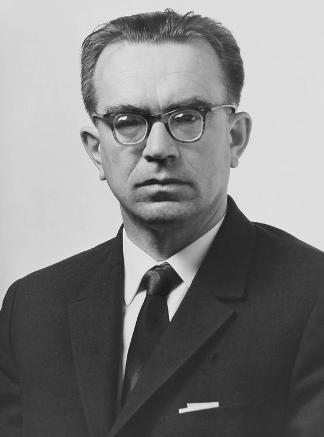
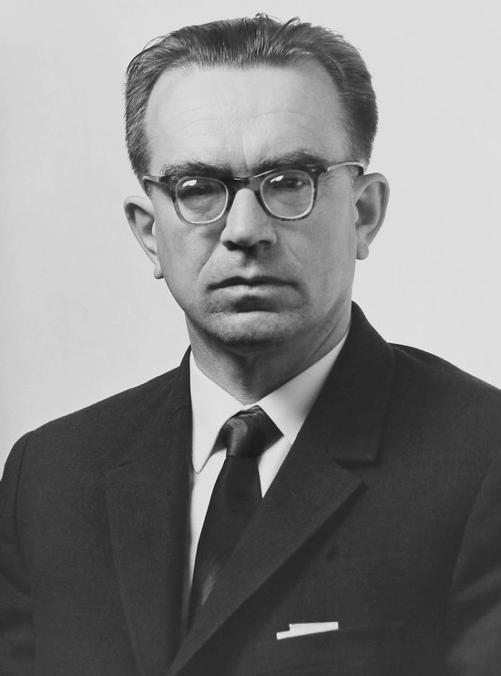
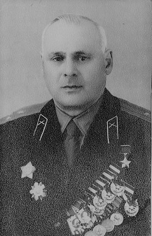
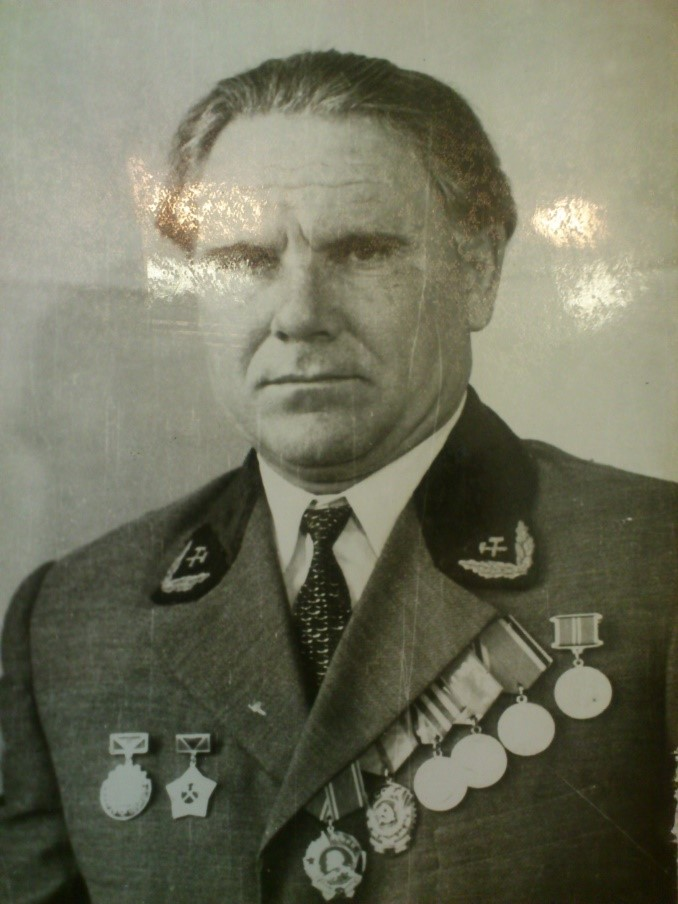
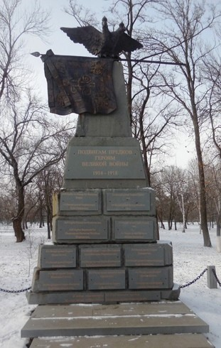

Глушков Виктор Михайлович
Вице-президент Академии наук УССР, Герой Социалистического Труда (1969), Лауреат Ленинской (1964) и Государственной премий (1968, 1977) СССР, директор Института Кибернетики.
Город Шахты ведёт свою историю с хутора основанного в 1805 году берегу реки Грушевки войсковым старшиной Поповым, который по ныне называют Поповкой. До 11 февраля 1920 года город Шахты носил наименование -Алексанровск - Грушевский. Промышленность города изначальна была ориентирована на добычу каменного угля твёрдых сортов -антрацита. Первую шахту построил в 1809 году войсковой старшина Попов.



День города шахты День города в Шахтах традиционно отмечается 16 октября. В городе проводятся многочисленные развлекательные мероприятия для детей и молодежи, жители гуляют по городу, смотрят выступления музыкальных коллективов, сидят в кафе и рестронах. В конце праздничного дня в ночном небе вспыхнут красочные фейерверки.
